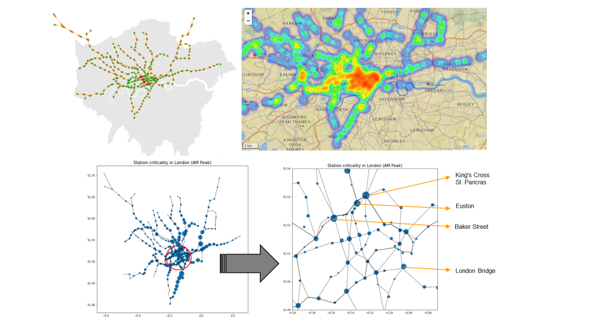

Vulnerability of Transportation Networks
Subway disruptions can lead to major delays with far-reaching impacts on urban economies, security, and quality of life. It is crucial to measure and compare the vulnerability of subway systems of varying network size and structure. In this study we evaluated the impacts of different levels of disruptions in subway systems of 5 cities. We identified most vulnerable stations and investigated the positive synergistic effects arising from multiple disruptions considering network topology. We found that all five cities exhibit positive synergies and most (but not all) synergies can be observed through the network topology alone. By evaluating stations with high synergies can help us find the hidden pair of stations that have huge impacts when shutting down simultaneously. The study can be used as a quantitative framework for planning of new routes, making systems more resilient in the face of disaster.
My work focused on the building and analyzing the network of London Tube.
Methods: Data Analysis (Python NetworkX, NumPy, Pandas), Spatial Analysis (Geopandas), Visualization (Matplotlib).